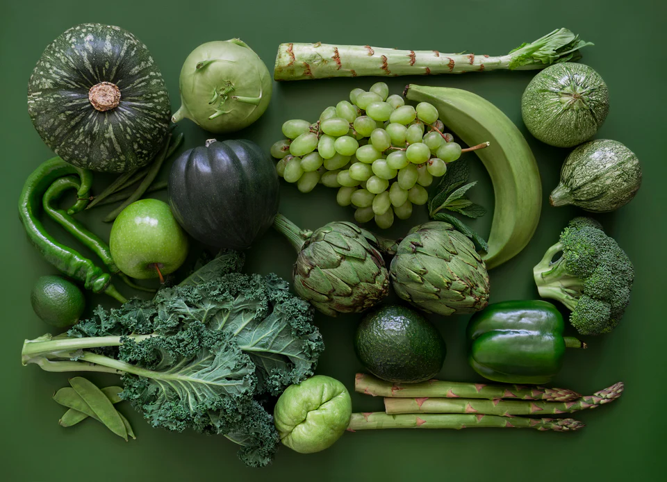
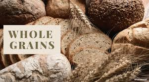
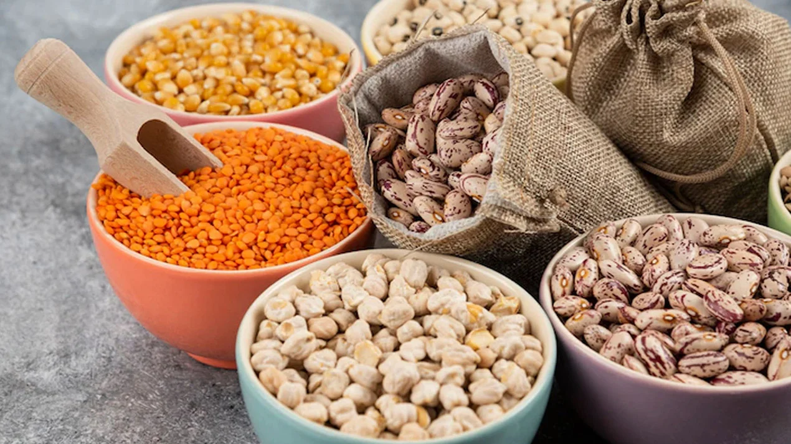
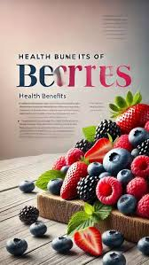
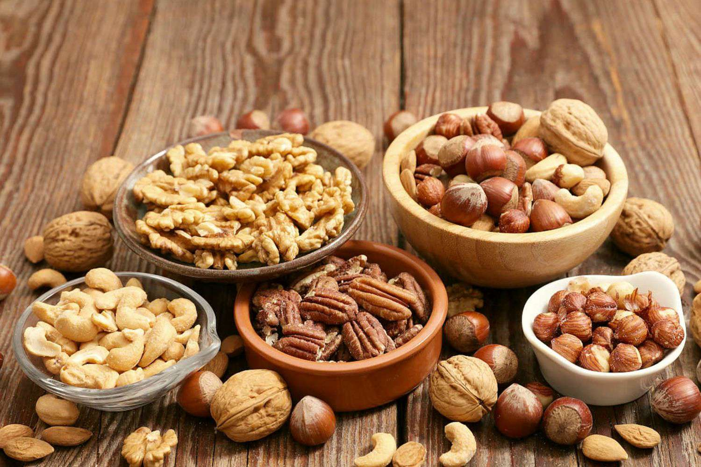
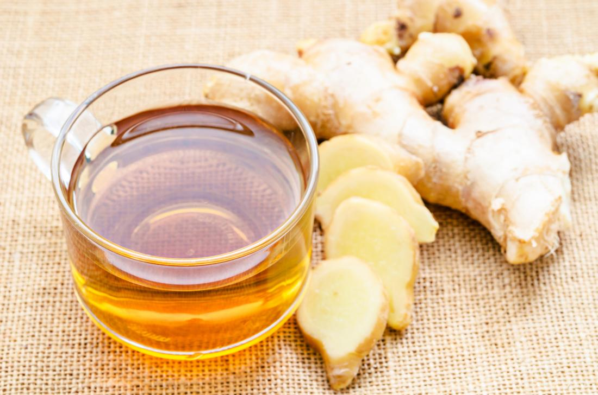

Leafy Greens
Spinach, kale, and methi are low in carbs and high in magnesium and potassium, helping control sugar & BP.

Whole Grains
Brown rice, oats, and quinoa reduce cholesterol and keep blood sugar stable due to high fiber content.

Legumes & Pulses
Rich in protein and fiber, lentils and beans help improve insulin sensitivity and heart health.

Fresh Berries
Blueberries and strawberries are antioxidant-rich, help manage sugar levels and support heart function.

Healthy Fats
Walnuts, flaxseeds, and chia seeds provide omega-3 fatty acids, helping reduce inflammation and blood pressure.

Herbal Drinks
Cinnamon tea, ginger water, and fenugreek decoctions help manage blood glucose naturally.